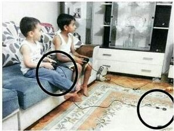
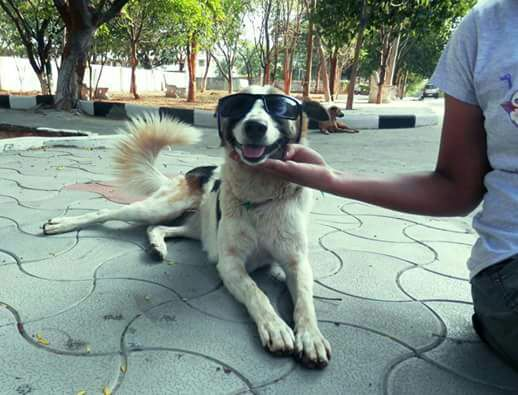

Achievements
I had my schooling till 10th from hometown and then moved to FIITJEE (Punjabi Bagh) where I worked really hard (like really really ).I used to be a complete nerd during FIITJEE classes , hence I achieved AIR 118 in JEE MAINS and AIR 790 in JEE ADVANCED. I scored 96% in my 12th. I also participated in KVPY where I got AIR 870.
Interests
I like to travel and fun around. Listening music and gaming is on top of my list. I love to listen Arijit Singh, Atif Aslam, Diljeet, Bruno Mars. Talking about games I love to play FIFA, NFS. I also had the memory of childhood with classic favourites-Age of Empires, NFS Most Wanted with my big brother and in the beginning I used to get trolled like....
I have some common interests like watching cricket, movies, TV series (Big time F.r.i.e.n.d.s and GOT fan). Sometimes I wish I could do " How you doin' " in Joey's style . I strongly love maths and coding too.
Besides all the material love, I have this soft corner for Dogs. Being in CCC is one of the best things that has happened to me in college.
Our oreo
